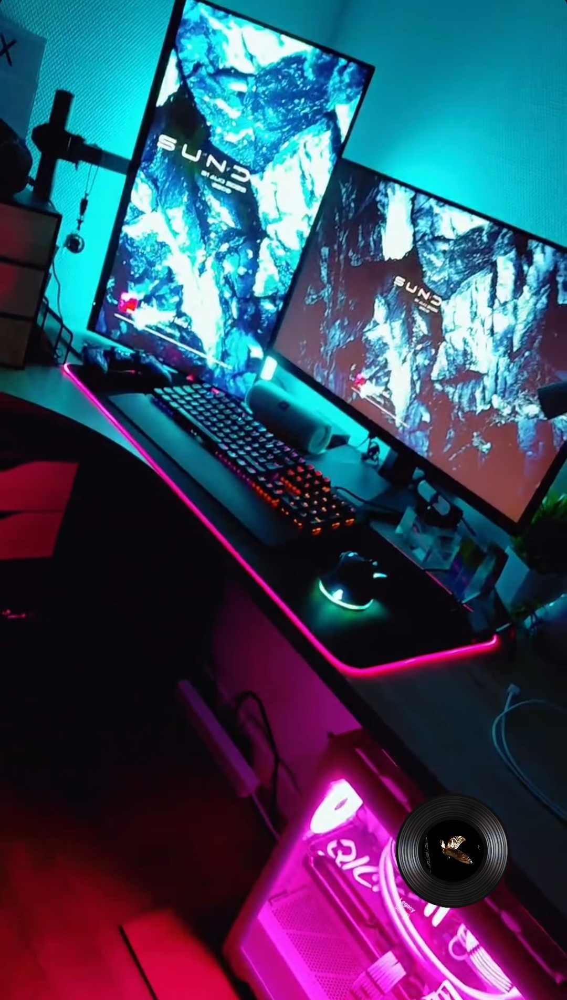

Mon "nom d'artiste" est Tezix_prod, un diminutif de mon nom complet
Tezix_musique_production, comme on peut souvent l'entendre dans mes
sons grâce à mon "tag" (voix modifiée qui énonce le nom de l'artiste plusieurs fois dans une
instrumentale pour éviter les problèmes de droit d'auteur, SACEM ...)
Les logiciels comme FL Studio ou BandLab me permettent de créer, arranger et mixer des sons pour donner vie à des univers musicaux variés. Que ce soit des rythmes entraînants, des mélodies planantes ou des basses profondes, chaque beat raconte une histoire.
J'ai commencé le son en 2020, suite au covid et à l'ennuie rencontré chez moi.
Après quelques vidéos vues sur YouTube et des heures d'écoute de Spotify à mon actif, j'ai décidé de me
lancer,
tout d'abord en suivant des tutos, en m'inspirant de beatmakers réputés (Ysos
principalement), puis en me créant mon propre style.

Ici, je te présente quelques beats que j'ai pu réaliser grâce à la
MAO.
Chaque composition est née de l'inspiration ou de l'émotion du moment, ou d'une simple idée musicale
tirée d'un moment du quotidien.
Magic Purple
Bounce Core
Projet #ATN (en recherche d'un rappeur)